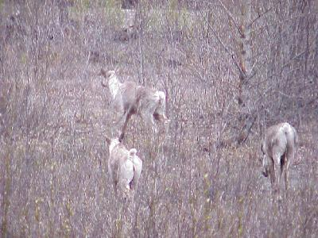

| We started the day leaving camp at 7:30. The weather was cold, the ice had not melted off the lake during the night. | |
| A few more caribou for the day. These three were just off the road. |  |
| We did stop by Liard Hot Springs for a soak. It was
great, but no pictures. After last night and the cold
wind blowing off the frozen lake, it was a great warmer-upper. Shortly after that we hiked in to look at Smith Falls. I had seen pictures of these falls before, and could not put them into perspective. Can you find Donald (see the hint) in this picture? |
|
| A Yukon welcome! We finaly made it to the Yukon, 3860 miles into our journey. |
|
| The Yukon Welcome center (Watson lake) has a sign post forest, started by one of the military men working on the Alaskan Highway fifty years ago. I didn't spend a lot of time looking for Ohio Signs but a few stood out (Cuyahoga Falls) some of which could be from any state, others like Welcome to Springfield Ohio leave litttle to question. | |
| We pulled into the camp grounds at
Rancherio Campgrounds at 7:30 after traveling 307 miles.
After freezing last night, being right off the frozen
lake, we selected a campsite well protected from the
winds, away from the river and canyon. Again most of the miles were on excellent roads, we had maybe 25 miles of packed gravel, the balance good pavement. Wildlife for the day included: moose (2); mule deer (2); and caribou (3). During the late evening a large dog-like animal passed by the van. In our later journeys we would find out he was likely a wolf. |
|